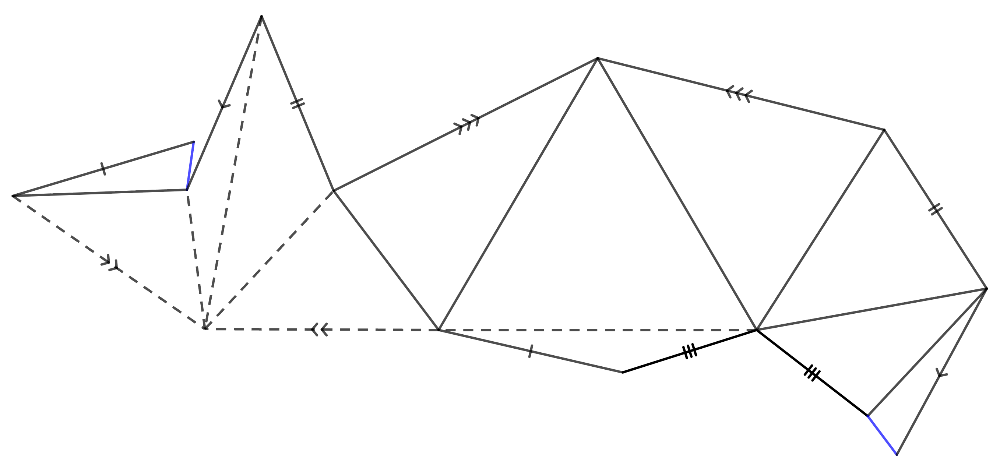

I am a PhD student at University College London studying differential geometry. My supervisor is Aleksander Doan.
Before that, I studied mathematics at the University of Cambridge.
I grew up in Reykjavík, Iceland. My mum is Faroese, and my middle name Wang is her surname. The similarity to the common Chinese surname is a coincidence. My last name means Atli's son.

Research
I study the interplay between analysis and geometry. Recently, I have been working on ideas related to the Fueter equation and Floer homology.
I have also studied flexible polyhedra, where I have used symmetric quadrilaterals to construct new examples. See the tab above for some of the models I have constructed.
Teaching
I lecture MATH0039 at UCL alongside Teymour Gray. This is an ancillary course on differentiation and integration. We also lectured the course in 2024.
In Michaelmas term of 2024, I taught Icelandic at the University of Cambridge for the Anglo-Saxon, Norse and Celtic department.
I teach the problem solving classes at UCL, and prepare the team for the International Mathematics Competition for University students, IMC.
I also take part in the training of the Icelandic team for the International Maths Olympiad, IMO, and have served as the deputy leader for Iceland.
If you make a paper model of a convex polyhedron, it will not flex, despite the fact that every edge functions as a hinge. By counting the degrees of freedom, polyhedra can be seen to be generically rigid. However, under certain symmetry conditions, polyhedra can be made to flex.
A flexible dodecahedron
Below is an example of a flexible polyhedron with 12 faces, discovered by me in the summer of 2025. It is the simplest possible flexible polyhedron by number of faces. For an explanation, see my paper.The model below is made using geogebra, and is completely interactive.
If you want an even more interactive model, you can make the flexible dodecahedron out of paper using the net below. Gluing instructions are given by labels on the edges. Mountain folds are solid and valley folds are dashed.
The Foxtrot
This polyhedrom relies on a method called twinning to construct new flexible components (crinkles). See here for a paper by myself and Simon D. Guest on the topic. That paper also discusses the history and relevant background.